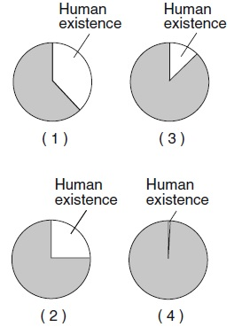

| Word | Definition |
|---|---|
| Original horizontality | rock layers were originally horizontal when they were formed by deposition of sediments. |
| Superposition | the lower layer is older, and the layer above is younger, when the layers were not disturbed or overturned. |
| Radioactive half-life period | the time for half of the atoms in a sample of radioactive isotope to decay |
| Index fossils | fossils that are easy to recognize, existed for a brief period of time, and are found over a large geographic area. |
Which graph best represents human existence on
Earth, compared with Earth’s entire history?
